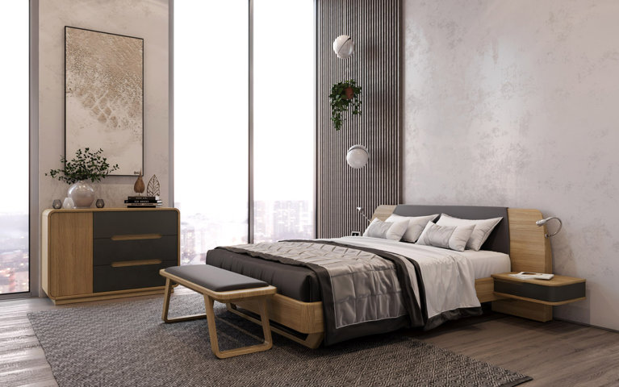

На сегодняшний день появляется все больше статей и методической литературы о трехмерном проектировании. Соответственно, старые методики начинают отходить на задний план, а им на замену приходят новые методы, которые оказываются более предпочтительными, чем традиционные. Дело в том, что современное жилье – это не только лишь фундамент, пол, стены и крыша. Неотъемлемой частью любого строения является также система электроэнергии, отопления, вентиляции и водоснабжения. Поэтому полноценная 3d визуализация проектов включает также проектирование всех этих систем. При этом команда проектировщиков и их профессионализм напрямую влияет на эффективность эксплуатации системы, сроки ее службы и простоту требуемой реконструкции. Преимущества проектирования в данных условиях следующие: Трехмерная визуализация, которая основана на точности инженерных расчетов, позволяет существенно снизить энергозатраты. А тщательно разработанный проект позволит в ближайшее время приступить к монтажным работам. Так экономится время, а следовательно, экономятся и деньги. Двухмерные чертежи, созданные вручную, требуют намного больше времени, чем конструирование модели в формате 3D. Например, 3d визуализация интерьера, в частности, готовый чертеж загружается в программу. Таким образом, исчезает потребность в создании изометрических чертежей по отдельности, поскольку работа программы предусматривает генерацию из трехмерных моделей. В конце концов, оконченный проект можно получить в кратчайший срок. 3d моделирование позволяет составить полноценное представление, в то время как стандартные методы двухмерного проектирования позволяют создать проект из нескольких частей. И чтобы выявить противоречия между ними, требовалась трудоемкая и кропотливая работа проектировщика. При этом, даже самый точный расчет допускал большой процент вероятности ошибки в совпадении.
Трехмерное проектирование исключает такие случаи. В автоматическом режиме создаются разрезы и перспективы, тем самым уменьшается время на разработку проекта. На первых этапах проектирования двухмерной модели довольно непросто сразу выявить ошибки при расчетах, неувязки или пересечения элементов. Это приходило лишь с большим опытом, а при его отсутствии уходило немало драгоценного времени на устранение подобных ошибок. При трехмерном проектировании это исключено, устранение неточностей теперь возможно на начальных стадиях. При 3D-проектировании становится доступно работать в команде. Автоматический режим работы позволяет любому члену команды, который отвечает за собственный элемент, обмениваться моделями между собой. Специализированные программы оснащены большой базой данных с множеством готовых моделей, она обновляется и пополняется через сеть Интернет. Посредством конвертации составляются изометрические чертежи, которые характеризуются повышенной точностью и им не требуется исправление. Таким образом, проект получается более точный, а денежные и временные затраты, в том числе и человеческие ресурсы, будут меньше.